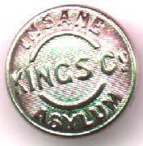

Wednesday, March the 17th, 2004
back to: title, date or indexes
Mrs Gubbins, the Inspector of Pails, Railings, Fences & Wheat at our Haemoglobin Towers annexe (see yesterday) is a keen David Icke fan, and may indeed be an extraterrestrial lizard person herself. Be that as it may, she has just been given an exciting new button,and a new job to go with it. From today, Mrs Gubbins will be steering us towards other sites on the web she thinks deserve Hooting Yard readers' attention. She introduces the first of her recommendations as follows:
“Go and look at these diagrams!”
Signed self-portraits of Mrs Gubbins will be available soon. Meanwhile, content yourself with this photograph of her new button:
